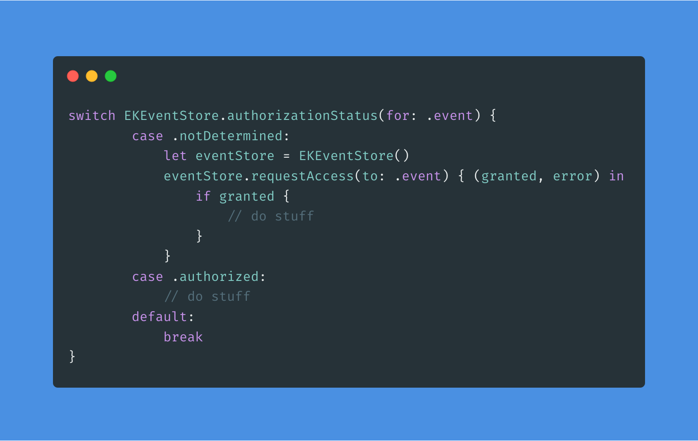
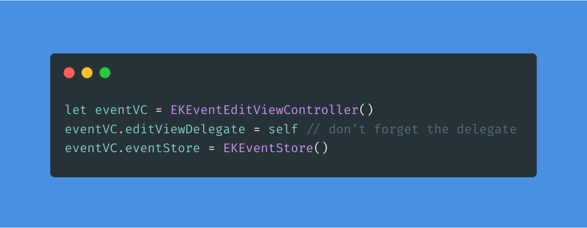
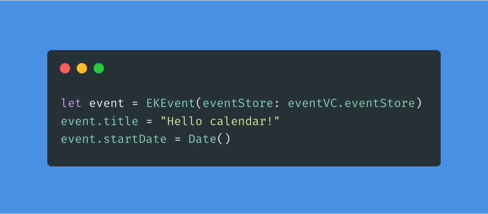
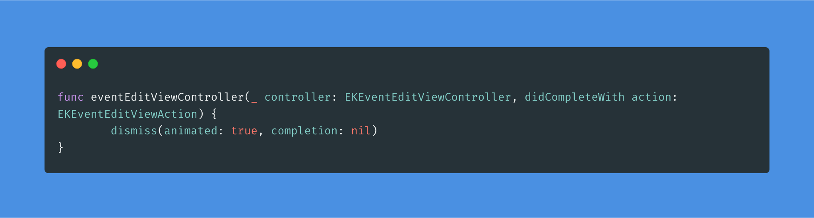

Recently I needed to save event to user's system calendar on iOS. Since this touches the OS itself and is outside of scope of the app, I was delighted that there is pretty nice solution thanks to EKEventKit framework and in particular EKEventEditViewController.
This view controller does exactly what the name suggests. It lets user view, edit and possibly save predefined event to system calendar. I couldn't find much online about the usage so after experimenting and piecing I decided to write short how to guide.
Since this component interacts with system, the first step is to add usage keys into Info.plist for your project. Yes I am talking about keys because the first one: NSCalendarsUsageDescription is not enough. You also need NSContactsUsageDescription. At first I'd been quite puzzled because cleary I am not doing anything with the users contacts. But then I realized the EKEventEditViewController shows shared calendar and also allows to invite people. So you need both.
For basic usage of the EKEventEditViewController you basically need just an instance of EKEvent and EKEventStore.
The EKEvent is the event itself, it has properties like title, startDate etc, those will be shown in the controller and subsequently saved to the user's calendar.
I am not sure what exactly EKEventStore is, according to the official docs it is:
An object that accesses the user’s calendar and reminder events and supports the scheduling of new events.
But you need it for the controller and the actual event itself. Importantly it needs to be same instance otherwise saving the event wont work.
So for the actual code..
Start by requesting access:

This is simplified example of course :-)
Note: It is possible that the eventStore.requestAccess closure won't be called on the main thread, so you should use DispatchQueue.main.async before attempting to show the view controller.
For the EKEventEditViewController you need two protocols: EKEventEditViewDelegate and UINavigationControllerDelegate to know when user finished their work and it is time to dismiss the view controller.
Finally create the controller object

Next create your EKEvent instance and use the EKEventStore instance from eventVC. Or just use single instance for both :-)

And show it:
present(eventVC, animated: true)
That's it!
One more thing
You need the delegate method to close the view controller
